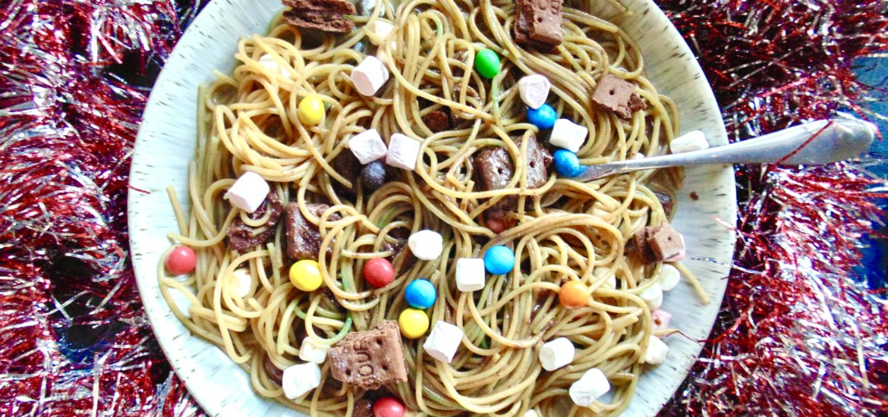

Buddy the elf pasta

Ingredients
- 160-200g of dried spaghetti
- 80ml (⅓ cup) maple syrup
- 50ml (¼ cup) chocolate syrup or sauce
- Handful of M&Ms
- Handful of mini marshmallows
- 1 chocolate Pop Tart or 3 chocolate Bourbon biscuits
Instructions
- Add your dried spaghetti to a pan of salted boiling water.
- Reduce the heat to a simmer and cook for 8-10 minutes until cooked to your liking.
- Drain your pasta in a sieve or colander and allow to cool slightly for 2 minutes.
- Tip your pasta out onto 2 plates (or 1 if you're feeling hungry!).
- Pour all the remaining ingredients over the pasta.
- Use your hands to mix everything together well. You can use a spoon or some tongs if you don't mind the inauthenticity.
Return to home page